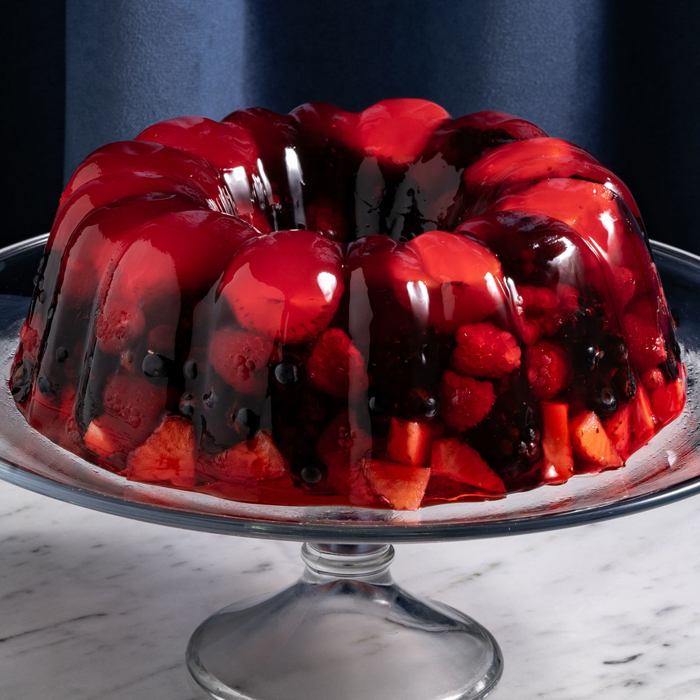

Gelatina de Frutos

Ingredientes
- 1 taza de agua
- 1 cucharada de extracto de vainilla
- 3 cucharadas de gelatina sin sabor disuelta en 1/4 taza de agua tibia
- 2 tazas fresas cortadas en dados
- 1 lata de Leche Condensada La Lechera
- 1 lata de Leche Evaporada Ideal
Cómo hacer gelatina de frutos rojos:
- En una olla calentar la Leche Evaporada IDEAL y el agua hasta que hierva. Retirar del fuego y agregar la Leche Condensada LA LECHERA junto con la vainilla, mezclar bien y reservar.
- Incorporar a la mezcla anterior revolviendo hasta que la gelatina se disuelva.
- Agregar las frutas y pasar la mezcla a un molde refractario redondo y refrigerar hasta que cuaje.